API Mgmt & Operations
Apply API Management to your APIs, configure failover/retry behavior for resilience, then monitor and dashboard the running platform.
What you'll cover
- API Management in Boomi
- Failover / Retry
- Monitoring and Dashboarding
API Management in Boomi
The API Management Lifecycle in Boomi has three stages - (1) Build and Integrate, (2) Operate and Manage, and (3) Share and Engage.
Then there are the three key aspects of API management:
The first is the creation of the APIs. You can create brand new APIs and augment existing services with the API Service Component. The API Proxy Component allows you to connect to existing APIs, which are housed outside of Boomi.
Then, there is the API gateway itself. This is the component where everything comes together and what is public is exposed to end users and third-party applications. This is important because it’s AtomSphere that’s interacting with the clients and protecting your APIs and data systems.
Finally, there is the developer portal. This is where developers who are external to the organization, or maybe internal to the organization, but external to AtomSphere, go to discover what APIs are available. It’s where we put security, subscriptions, and policies on publicly available APIs. It is also where we make it possible for developers to develop, test, and self-service their integrations.
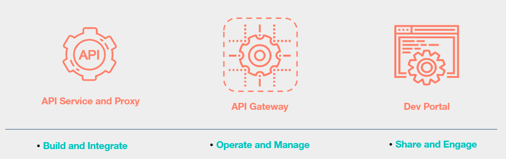
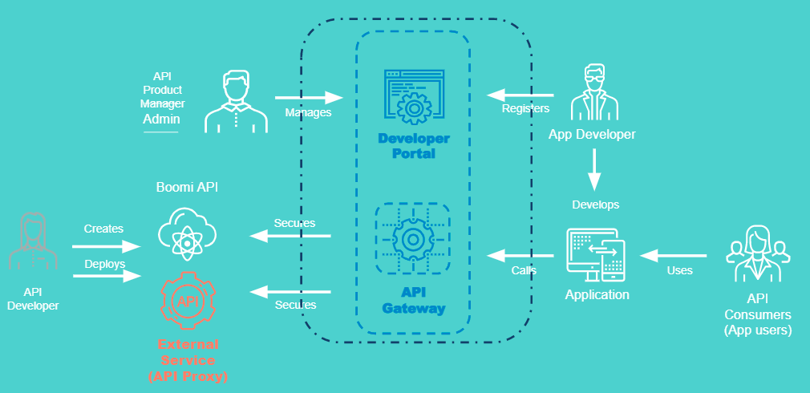
Once platform login is done. Click on the Manage tab and then Atom Management.
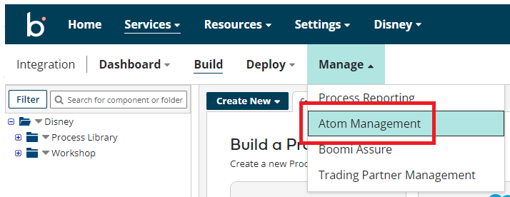
Click on Atom Name on the left panel of the window and then on Shared Web Server.
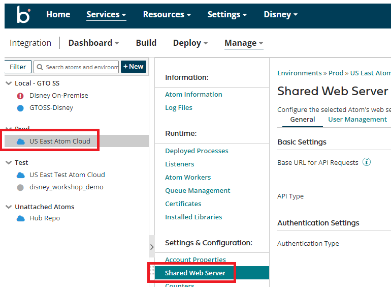
Shared Web Server Settings will be slightly different for the Native Cloud runtime and the local runtime.
For Native Cloud runtime.
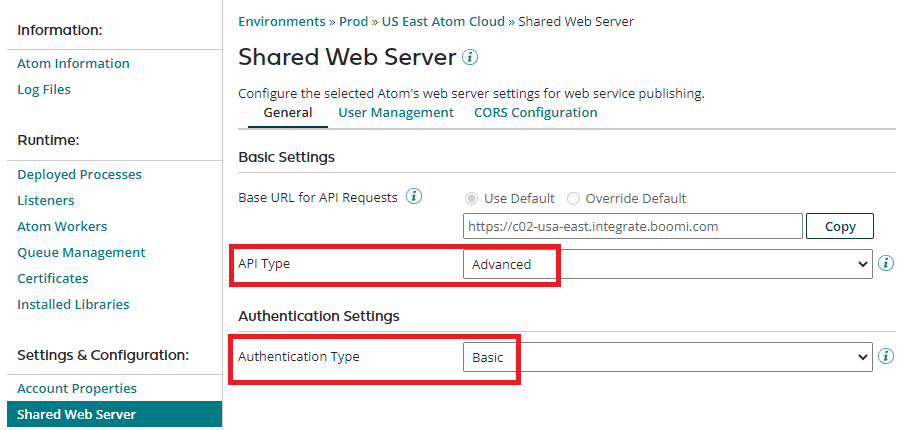
For local runtime.
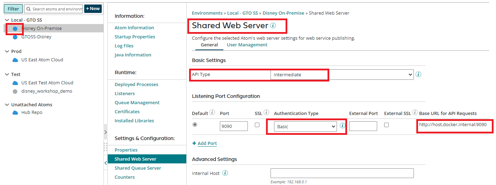
Controlled under Atom Management
Determine what type of requests can be made.
API Type = “Advance” for API management.
Authentication Type= “Basic” for the APIs deployed to the run time.
Authentication settings indicate how the API requests will be authenticated. To take full advantage of available API Management features, the authentication type will be set to Gateway. This type of authentication leverages a validation token accessible to a Bomi API Gateway that is validated by Atom. Molecule or Cloud to Authenticate.
Click on the User Management on the same Shared Web Server Tab.
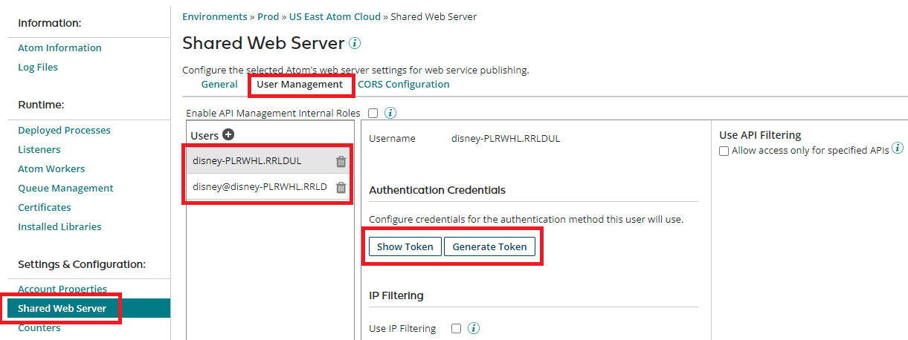
On this page, you can see the username and token which are used to authenticate the deployed API where the authentication type is Basic.
Click on the Services tab and then API Management from the list.
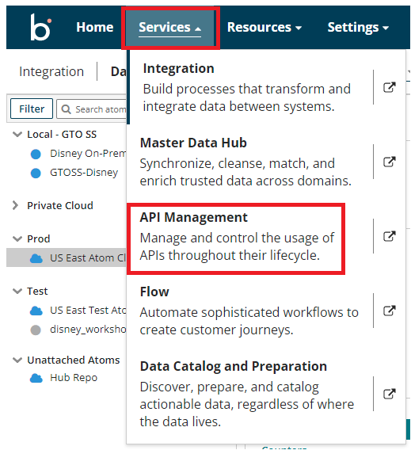
The following page will be displayed
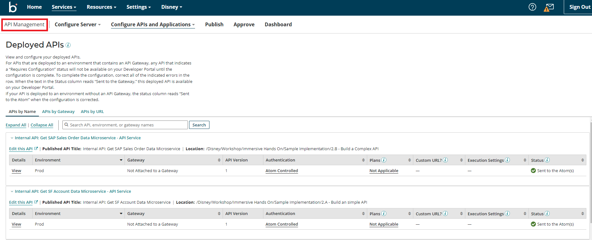
On this page, you can see all the deployed APIs and their configuration with details. One can also see other tabs and sub tabs which give information on the functionality and allows to set the values as per requirement.
The landing page shows the list of all Deployed APIs.
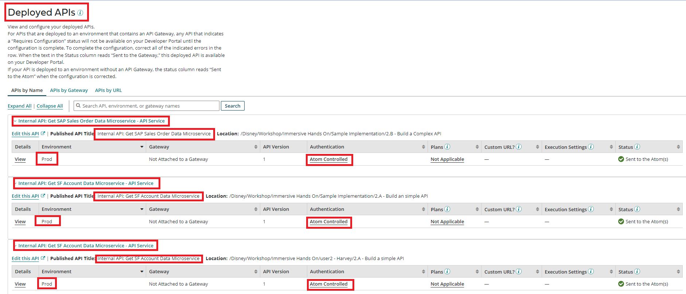
One can also filter the API by Name, Gateway, or URL.
By Name
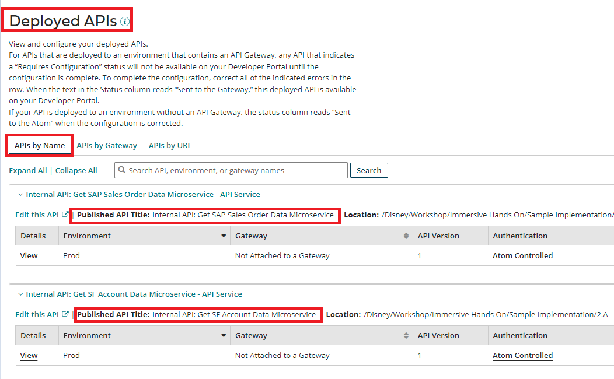
By Gateway
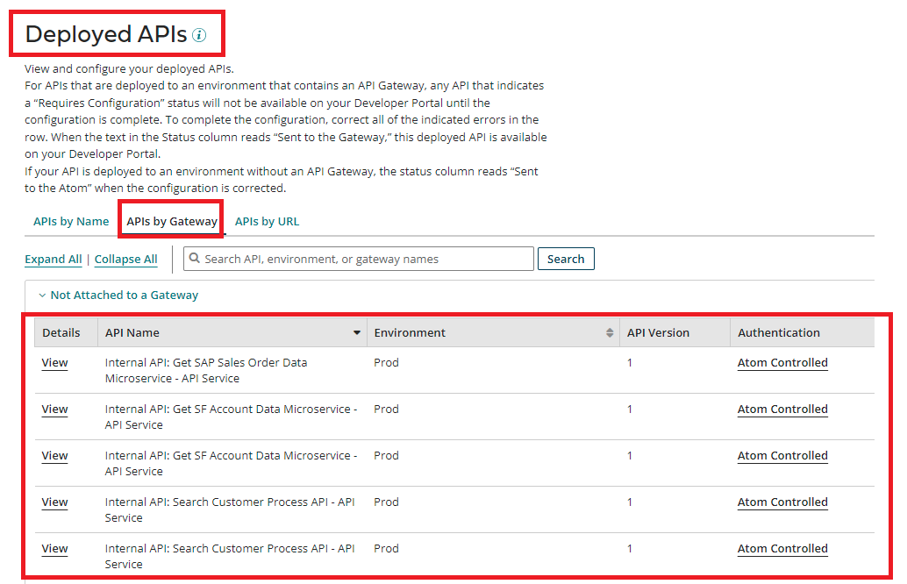
By URL
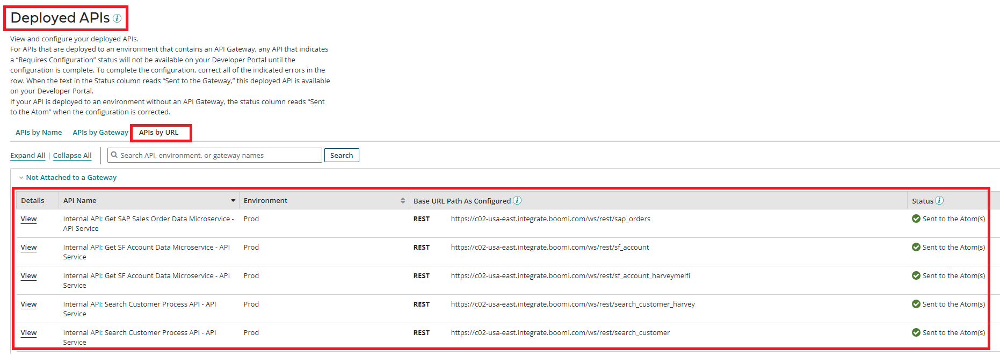
Click on the Configure APIs and Applications tab the Applications.
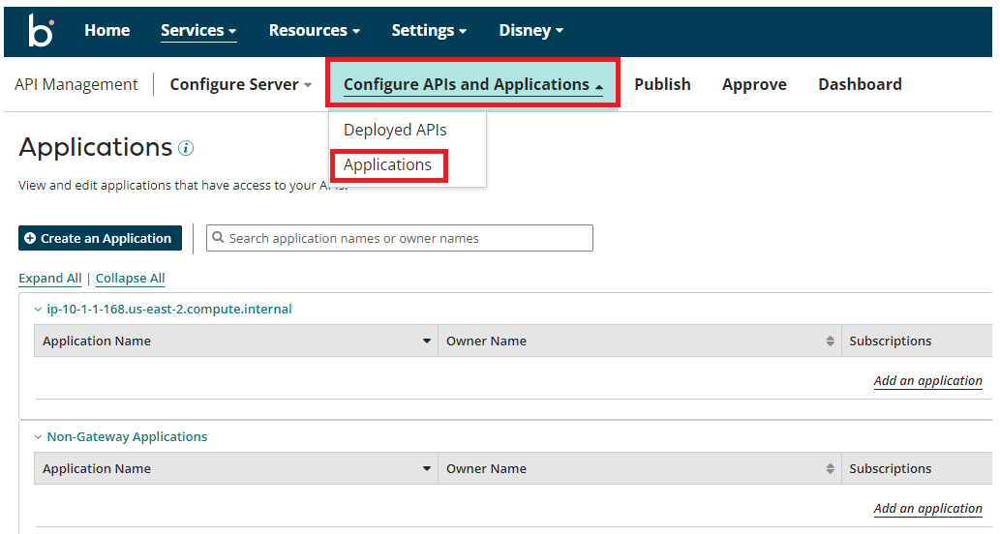
An application provides access to the related group of APIs. It tells us, as we manage the API, what entity to a specific API.
Click Configure Server. Three options are available - Gateways, Plans, and Authentication.
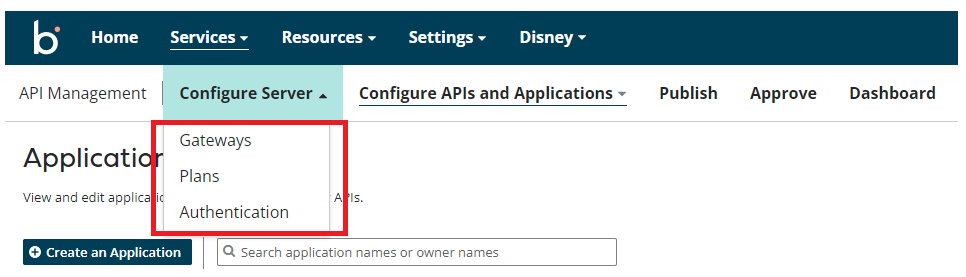
Gateways
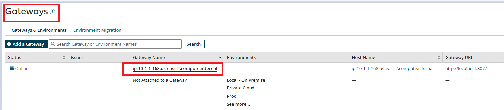
API Gateways route API calls to the various Atoms, Molecules, or Clouds in an environment and provide policies that restrict access to the API.
Plans
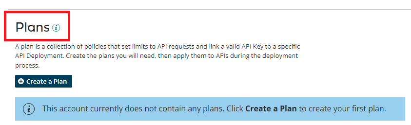
A plan is a collection of policies that set limits to API requests and link a valid API Key to a specific API Deployment. Create the plans you will need, then apply them to APIs during the deployment process.
Authentication
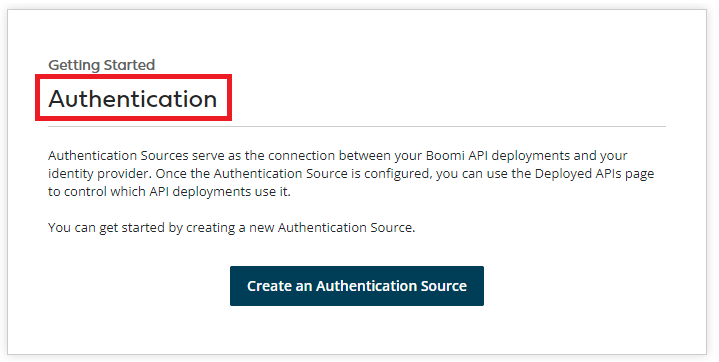
Authentication Sources serve as the connection between your Boomi API deployments and your identity provider. Once the Authentication Source is configured, you can use the Deployed APIs page to control which API deployments use it.
Click on Publish tab on the API Management Page.
.
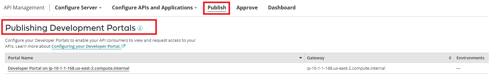
This screen provides a list of all of the Developer Portals you have in your account. Each API Gateway has one associated Developer Portal.
Click on Approve tab on the API Management Page.
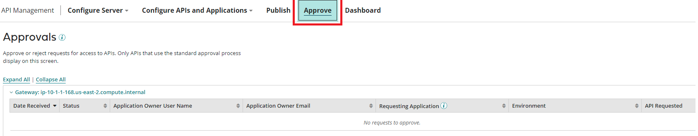
Approve or reject requests for access to APIs. Only APIs that use the standard approval process are displayed on this screen.
Click on the last tab Dashboard on the API Management Page.
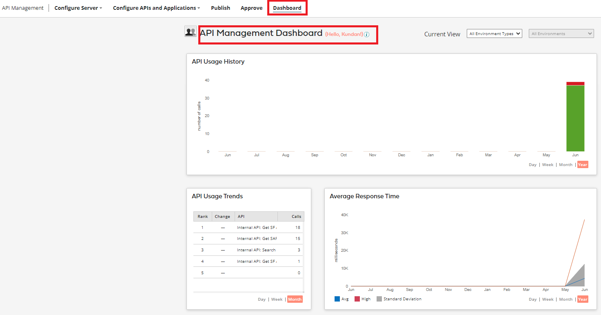
The Dashboard link in the API Management menu opens the API Management Dashboard page. It provides a quick view of the activity and status of your deployed APIs.
The API Management Dashboard page is divided into several sections.
API Usage History
API Usage Trends
Average Response Time
Failover / Retry
In this exercise, you will explore the unified Boomi Process Monitoring portal. This is where you will see every transaction that gets executed on any of the Boomi runtimes that you have installed in your Boomi your account, including Batch processes and real time API processes. You can drill in to see the payloads that were sent to each application to debug any issues. You can replay process instances that may have failed because a system was down so that the transactions will complete successfully and even replay them in the Boomi Integration Test mode to be able to see all the data flowing between every step. Also, using the View Process State capability, you can see how long each step took to execute so you can quickly identify any bottleneck. This is where you would manually initiate a Process invocation by clicking on Execute Process. The process logfile can be viewed and downloaded for further analysis.
From the Integration perspective, click on Manage -> Process Reporting.
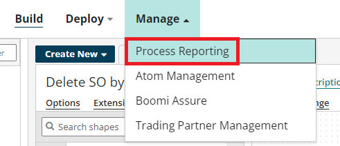
You can see a list of all the process executions on this screen. Click on the time for any process.
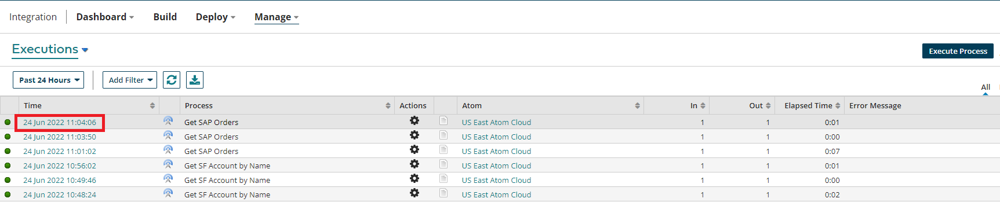
You can see the details of connectors and number of documents and other metadata on this screen. Click on the success for the start shape.
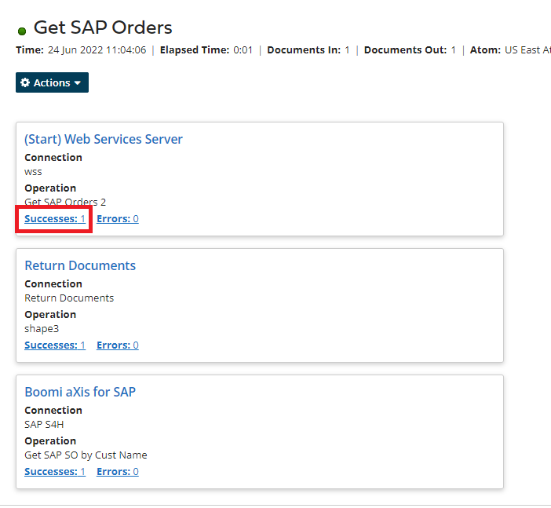
You have the option to Re-run documents here. You can also Re-run the documents in Test Mode for error debugging.
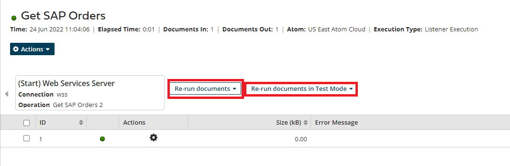
Monitoring and Dashboarding
Once platform login is done. Click on the Manage tab and then Process Reporting.
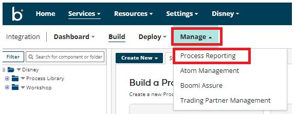
Process reporting out-of-the-box features that provides monitoring capabilities. It is also a search console for accessing information about executed processes. You can review statistics about the execution to see how documents have succeeded, failed, and/or react against connectors and process shapes in an elapsed timeframe.
Once clicked on Process Reporting following page is displayed.
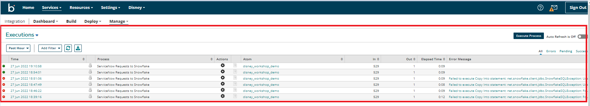
Slide On on the Auto Refresh Table to have the execution records automatically refresh every minute.
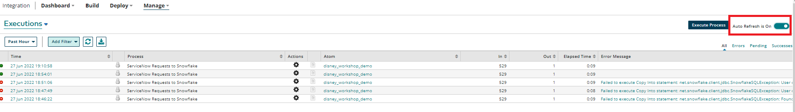
Choose any execution record in the executions view, click the Actions gearbox, and select View Deployment Components
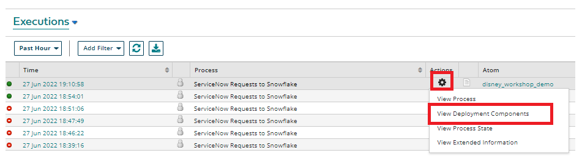
Click the View/Edit button on any component from the list.
A new browser tab or window opens displaying the direct component instance. The component revision number from the Components in this Deployment Version table corresponds to the component revision number in the revision history. You can review the specific component configuration the atom is executing and reporting on the manage tab, which may correspond to the latest version of the process or sub-component.
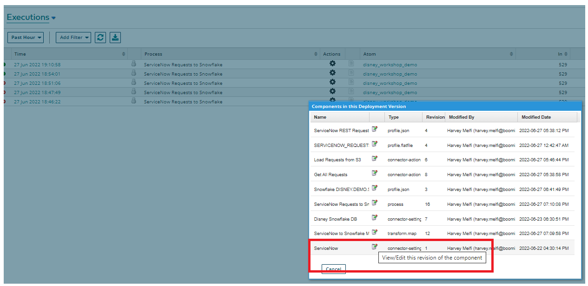
Close the window to return to a view of the Deployed Components.
Click Cancel to return to the process reporting window.
Highlight the first execution record and click the View Process Logs symbol.
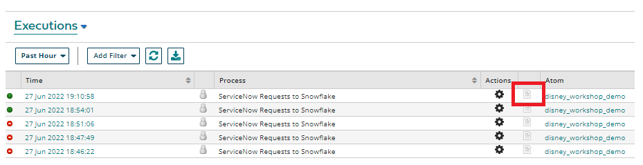
Examine the details in the Show Log window, then click Cancel to return to the Process Reporting window.
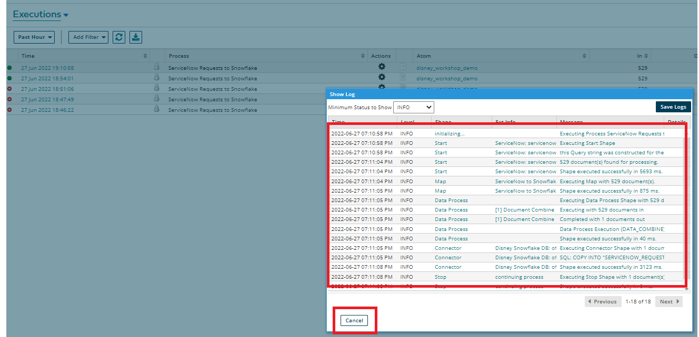
You can also View Document Statics.
The Detail View pane displays the inbound and outbound data for the selected process execution. Documents In refers to the documents captured on the start shape. Documents Out refer to any connector shapes which retrieve or send documents. In this exercise, you will review logs.
Click the hyperlinked timestamp to open the first execution.
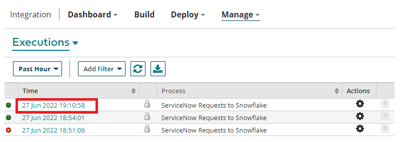
A detailed process execution view slides in from the right containing process and document-level information. Click the Successes link on the (Start) ServiceNow REST to view individual documents.
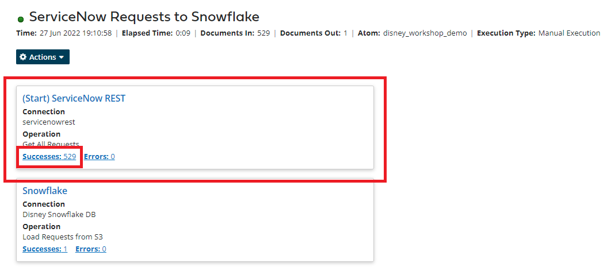
In the documents section of the Detail View pane, click the Actions button of the first inbound data record and choose View Document.
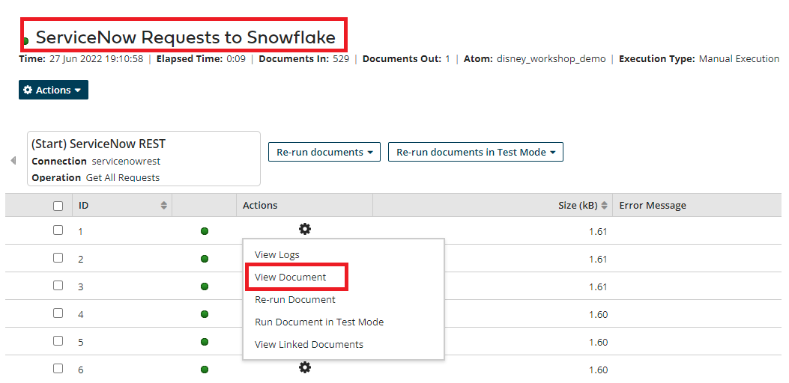
The Atom temporarily uploads the document to the Document Viewer.
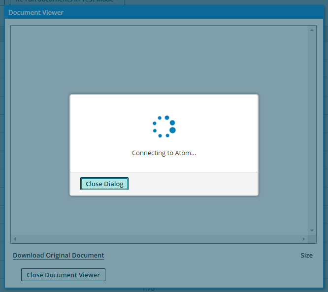
The data is then displayed in the Document Viewer pop-up window. Review the data and click the Close Document Viewer button when finished.
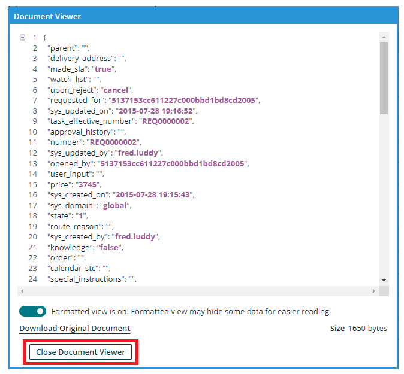
For large files, you may not be able to view the complete document in the Document Viewer. To download the full document contents to a file on your workstation click Download Original Document.
Click on the Close button to close the log page and return to the main page.
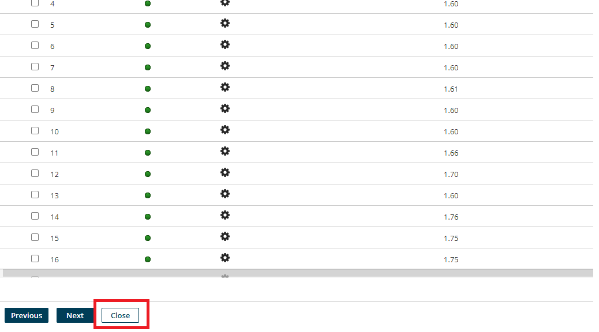
Click the View Extended Information gear symbol to Extended Execution Information
.
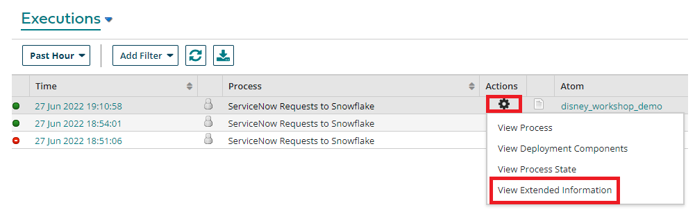
The Extended Execution Information window drops down from the top displaying the Execution ID field for this single record. Click on Close to return to the main window.
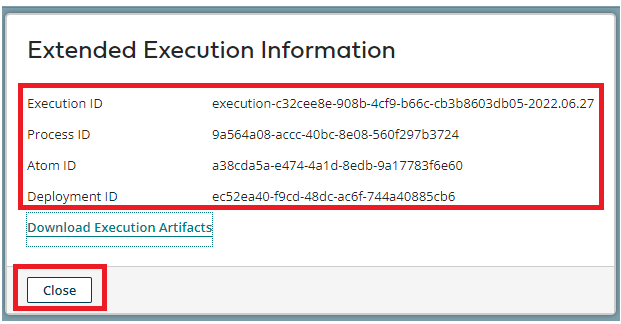
You can also click on Add Filter, and from the drop-down choose an option to apply filter and see the desired execution logs. Click on Atoms to create a filtered view.
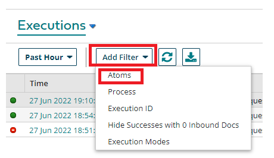
After clicking on the Atoms option -> choose the Atom name.
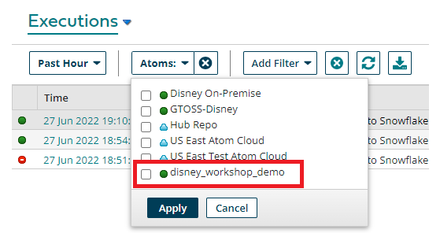
A filtered view of the Execution can be seen.
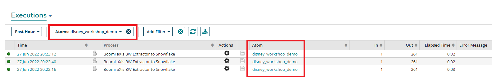
You can also view the as per Documents and Trading Partner. Click on the Executions link.
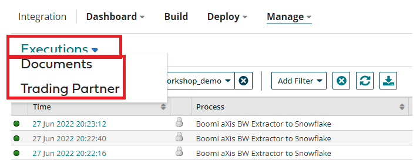
You can also see the execution log for the desired time frame. Click on the Past Hour button.
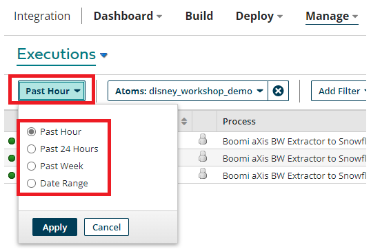
You can also explore other filters and features available on the Process Reporting Page.
Click on the Dashboard in the top left corner can you can see different Dashboard Options available.
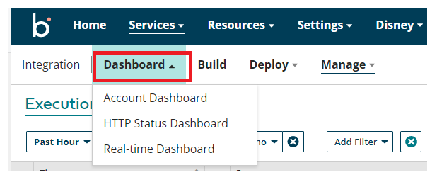
Boomi AtomSphere’s dashboards provide snapshots of the status of executions, HTTP status codes, and the status of low latency processes.
The Account Dashboard is available to all accounts. The HTTP Status Dashboard is available if the Services Enablement feature is enabled in your account.
Click on Account Dashboard.
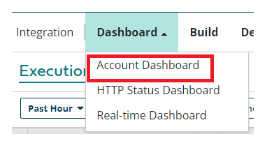
After clicking
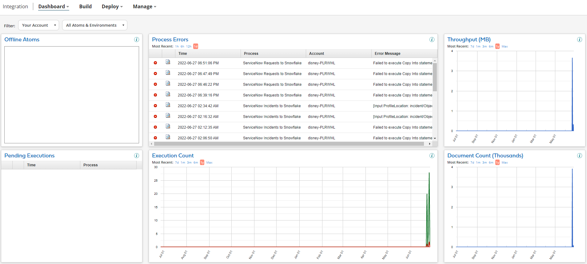
On the Account Dashboard page, you can view a summary of recent activity within your account. If you are a partner supporting multiple customers, this dashboard can provide a summary of your customers' integration activities and highlight recent errors and execution trends.
The Account Dashboard page is divided into several sections or gadgets:
Offline Atoms
Process Errors
Throughput
Pending Executions and Connector Usage
Execution Count
Document Count
Click on the Dashboard tab and then HTTP Status Dashboard.
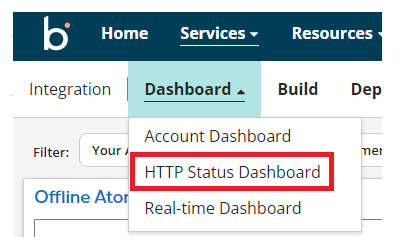
After clicking
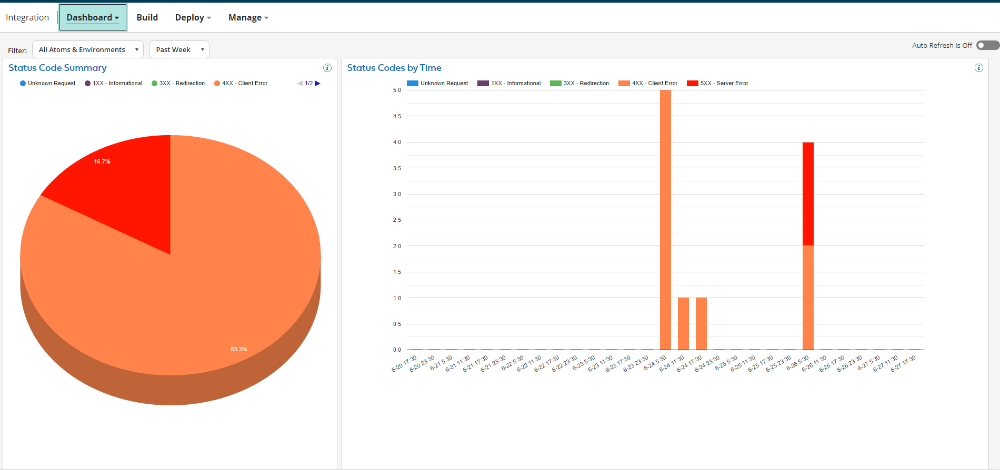
On the HTTP Status Dashboard, you can view a summary of the logs on a particular Atom or environment during a specified period.
- Click on the Dashboard tab and then HTTP Status Dashboard.
After clicking.
The Real-time Dashboard page provides summary status of low latency processes that occurred in the time and/or date range that you select.
The low latency process execution information is aggregated, rather than reporting every execution. This summary information, which may be delayed up to five minutes after processes have completed, appears on the Real-time Dashboard rather than the Manage menu’s Process Reporting page.
The Real-time Dashboard page is divided into several sections called gadgets.
Execution Status by Time
Execution Status
Average Response Time
Process Summary Report